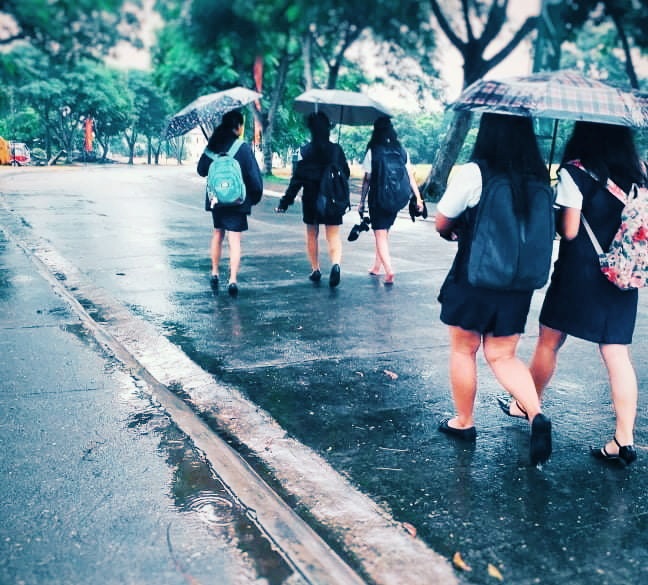

Childhood Years
1First is my Childhood Years.2 I was born on August 10, 2001, at Bacoor Cavite and I have three siblings.3 My eldest sister name is Ruegin S. Añonuevo, followed by Erika S. Añonuevo and Royce Gee S. Añonuevo.4 My parents name are Ruben P. Añonuevo and Gina S. Añonuevo.5 My childhood years were fun and cool until my mother died. She died when I was 10 years old a coming grade 5 student.6 When my mother died I feel weak, I feel I am lost, I do not know what to do without my Mother.7 I was still a child back then, I am the one who's with her every time and I can not believe in just a blink of an eye I lost her.8 I act strong in front of everyone because my Mom always tells me that be strong in every moment of my life and take courage.9 Life must go on, I must graduate and make my mother proud even she was not here by our side because I know somewhere out there she is still with us.10 My mom friends look after me in the school they were nice.11 When I was a grade 6 student I decided to join journalism just to try some new in my life.12 I joined cartooning even my drawing is bad I still want to try.13 My classmates and proctor are very nice and talented because of them I still want to continue to draw but I am too lazy to practice and improve my skills.14 At the competition, my drawing got complimented by the judges they said it looks like President Benigno Aquino III.15 I felt happy and motivated that day.16 I never regret joining journalism I gained experience back then, but I started to decide to stop drawing for some reason.17I am not a smart kid I am a lazy kid but, I let myself stay in the start section when I was in grade school because my mother wants me always to stay in the star section.18 I graduated elementary with the award of Huwaran and no special awards because after my first competition I quit journalism.19 I got distracted and I enjoy watching anime and doing nothing except watching.20 I am afraid to go to High-school, I am afraid of what kind of people I will meet when I started to transfer school.

Teenage Years
1 Second is my Teenage Years.2 When I was teenager I really enjoy my life, I started to explore somethings that I didn't done before.3 I met good friends, good people, and a good teachers that always guide us to the right path.4 I remember when I was a grade 11 student at AMA Computer Colleges Cavite it is the first time someone baked a cake for me, my classmate baked a cake for my birthday.5 I am very thankful I met them.6 My teenage life is full of happy memories, sad memories, struggles, and betrayal.7 I am always one of the boys we always goofing around, playing together online games, and many more.8 I am the class president when I was a grade 11 but I am the one who always does silly things.9 I remember when I made my classmate cry but It Was not my intention to make him cry.10 He's the one who started it I just defend myself but I feel sorry for him, well before the class ends I say sorry to him for what I have done and say to him, but I never said foul words and didn't hurt him physically either.11 One moment we had a quiz in programming and it was all about deciphering and cipher codes, I didn't review much because I had headaches that time, but when I saw the result of my quiz I am the highest and I can't believe it I wonder what kind of brain I have that time.12 I love supporting my classmates when they are joining school events, I am the most hyper and always shout their names when they were called.13 Teenage life is full of wonderful memories and you love to go back.14 The most difficult moment for me when I was in my teenage days is our work immersion.15 My immersion is at the Municipality of the General Trias Cavite 1 hour of travel from our house.16 That time I realize working is hard and being with other people is hard to be with also.17 I remember when the Taal Volcano erupts our school at Ara Vista near Silang and Tagaytay is full of ashes.18 It's like snow but black and it was the time that N-Cov virus is spreading.19 Spending time with your friends is the best.20 I also love my 18th birthday because all of my friends in my Senior Highschool came and spend time with me.21 My Friends when I was in Junior Highschool also celebrated my birthday with me.

College Years
1Third is my College Years.2College is just fine but a very tough one because of the Covid-19.3 The virus ruins everything, it cause a lot of damage to many people and it ruined my College life.4 I am very excited when my Father agree that I will go to college in Manila with my cousins.5 Suddenly there is a virus that causes a great disaster and it made all the people stay inside of their house, stay healthy and wear a mask when you will go out to buy some food or anything you need.6 I came from a school that already has Blended Learning so the online class is nothing to me.7 In my first year here at the University of the East Manila, I am nervous because I do not know everybody I do not have friends or acquaintances except my cousins.8 I am studying for a Bachelor of Science in Information Technology, because one day I would like to build my website even I suck at designing but still I enjoy designing.9 Every semester is a tough battle for a lazy and slow learner like me but still, I manage to pass all my subjects.10 I am now a second-year college and this webpage is made for my activity in one of my subjects.11 I hope this went well and learn more about designing web pages even I am still not that smart when it comes to written works.12 I will try my best to graduate college and find a better job in the future.13 I know it is still a long journey for me, I will not stop aiming for something that will benefit me.14 Being in College is not easy, it's not like when I was a Highschool student.15 In College, if you want to survive you must do all the tasks that were given to you because when you fail a subject you fail no other than that.16 My studies right now are fine I hope it will go well.17 Being an IT student and a lazy person is a tough battle to get a higher grade in every subject.18 I need to finish all my units and I don't want to have back subjects I don't want to be left behind. 19 I will work hard so that I will have a good job in the future.20 College is tough even in the online class because sometimes my personal computer always hangs because of its low specs, but I will keep trying to finish this course and make my family proud.